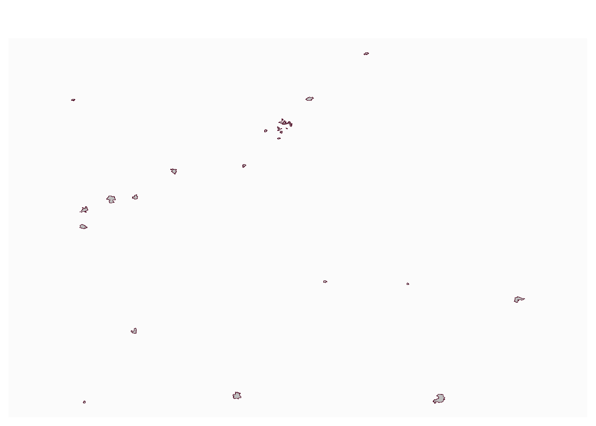
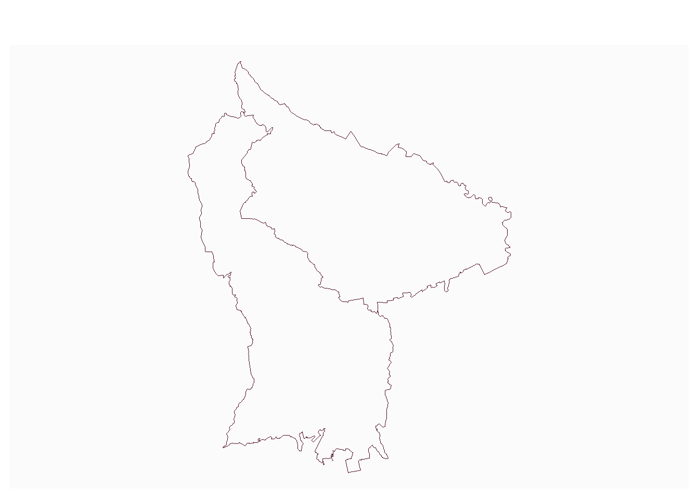

Code
choix <- read.table("data/choix.csv", fileEncoding = "UTF-8")
choix <- as.vector(choix$V1)Préparation des fichiers
pb JSON to GEOJSON
à la main car pas de librairie simple trouvée et format=geojson ne fonctionne pas
https://geo.api.gouv.fr/communes?code=93010&fields=code,nom&format=geojson$geometry=contour
On déconstruit et on reconstruit X Y multipoint / poly / sf
Linking to GEOS 3.13.1, GDAL 3.11.4, PROJ 9.7.0; sf_use_s2() is TRUElibrary(httr2)
df <- NULL
pb <- NULL
for (c in choix){
print(c)
url <- paste0("https://geo.api.gouv.fr/communes?code=", c, "&fields=code,nom,contour")
rqt <- request(url)
rep <- req_perform(rqt)
data <- resp_body_json(rep)
if (length(data)!=0) {
# on extrati pas à pas
#code <- c
nom <- unlist(data [[1]][2])
data <- data [[1]][3]
data <- data[[1]][2]
data <- data [[1]][1]
data <- unlist(data)
Y <- data [c(seq(2,length(data), by = 2))]
X <- data [c(seq(1,length(data)-1, by = 2))]
pts <- NULL
for (ind in c(1:length(X))){
tmp <- c(X [ind],Y[ind])
pts <- rbind(tmp, pts)
}
mp <- st_multipoint(pts)
poly <- st_cast(mp,"POLYGON")
dfTMP <- st_as_sf(data.frame(code=c, nom=nom, geom=st_sfc(poly)))
df <- rbind(dfTMP,df)
}else{
pb <- c(c,pb)
}
}[1] 73296
[1] 97224
[1] 93066
[1] 31555
[1] 95428
[1] 64122
[1] 44213
[1] 44109
[1] 69081
[1] 92036
[1] 44081
[1] 93029
[1] 92023
[1] 97209
[1] 28028
[1] 93001
[1] 92046
[1] 92002
[1] 92012
[1] 78621
[1] 33063
[1] 93057
[1] 50031
[1] 49007
[1] 72181
[1] 63164
[1] 94018
[1] 13001
[1] 60159
[1] 93070
[1] 93007
[1] 93064
[1] 59392
[1] 91339
[1] 75119
[1] 93010[1] 75119
cas 19e
13 28 31 33 44 49 50 59 60 63 64 69 72 73 75 78 91 92 93 94 95 97
1 1 1 1 3 1 1 1 1 1 1 1 1 1 1 1 1 5 8 1 1 2 Deleting layer `commune' using driver `GPKG'
Writing layer `commune' to data source `data/cours3.gpkg' using driver `GPKG'
Writing 36 features with 3 fields and geometry type Polygon.intersecterLimite <- function(commune){
car <- st_read("data/gros/construction.gpkg", unique(commune$dpt), quiet = T)
limite <- st_cast(st_geometry(commune), "MULTILINESTRING")
# afin de récupérer toute la géométrie du carré
car$intersecte <- sapply(st_intersects(car,limite ), length)
inter <- car [car$intersecte>0,]
}
res <- NULL
insee <- commune$code
insee <- insee [-grep("^97",insee)]
for (i in insee){
c <- commune [commune$code == i,]
tmp <- intersecterLimite(c)
res <- rbind(tmp, res)
}
st_write(res, "data/cours3.gpkg", "carLimite", delete_layer = T, quiet = T)Pour le 97
Reading layer `carreaux_200m_mart' from data source
`C:\Users\bmaranget\L6ECSIG\data\gros\carreaux_200m_mart.gpkg'
using driver `GPKG'
Simple feature collection with 11220 features and 34 fields
Geometry type: POLYGON
Dimension: XY
Bounding box: xmin: 690600 ymin: 1592600 xmax: 735000 ymax: 1645800
Projected CRS: RGAF09 / UTM zone 20NCoordinate Reference System:
User input: RGAF09 / UTM zone 20N
wkt:
PROJCRS["RGAF09 / UTM zone 20N",
BASEGEOGCRS["RGAF09",
DATUM["Reseau Geodesique des Antilles Francaises 2009",
ELLIPSOID["GRS 1980",6378137,298.257222101,
LENGTHUNIT["metre",1]]],
PRIMEM["Greenwich",0,
ANGLEUNIT["degree",0.0174532925199433]],
ID["EPSG",5489]],
CONVERSION["UTM zone 20N",
METHOD["Transverse Mercator",
ID["EPSG",9807]],
PARAMETER["Latitude of natural origin",0,
ANGLEUNIT["degree",0.0174532925199433],
ID["EPSG",8801]],
PARAMETER["Longitude of natural origin",-63,
ANGLEUNIT["degree",0.0174532925199433],
ID["EPSG",8802]],
PARAMETER["Scale factor at natural origin",0.9996,
SCALEUNIT["unity",1],
ID["EPSG",8805]],
PARAMETER["False easting",500000,
LENGTHUNIT["metre",1],
ID["EPSG",8806]],
PARAMETER["False northing",0,
LENGTHUNIT["metre",1],
ID["EPSG",8807]]],
CS[Cartesian,2],
AXIS["(E)",east,
ORDER[1],
LENGTHUNIT["metre",1]],
AXIS["(N)",north,
ORDER[2],
LENGTHUNIT["metre",1]],
USAGE[
SCOPE["Engineering survey, topographic mapping."],
AREA["French Antilles onshore and offshore west of 60°W - Guadeloupe (including Grande Terre, Basse Terre, Marie Galante, Les Saintes, Iles de la Petite Terre, La Desirade); Martinique; St Barthélemy; northern St Martin."],
BBOX[14.08,-63.66,18.32,-60]],
ID["EPSG",5490]]
0 1 2
11047 144 29 Driver: GPKG
Available layers:
layer_name geometry_type features fields crs_name
1 73 Polygon 16387 35 RGF93 v1 / Lambert-93
2 93 Polygon 4238 35 RGF93 v1 / Lambert-93
3 31 Polygon 42359 35 RGF93 v1 / Lambert-93
4 95 Polygon 8763 35 RGF93 v1 / Lambert-93
5 64 Polygon 38211 35 RGF93 v1 / Lambert-93
6 44 Polygon 45780 35 RGF93 v1 / Lambert-93
7 69 Polygon 28758 35 RGF93 v1 / Lambert-93
8 92 Polygon 3288 35 RGF93 v1 / Lambert-93
9 28 Polygon 17735 35 RGF93 v1 / Lambert-93
10 78 Polygon 15076 35 RGF93 v1 / Lambert-93
11 33 Polygon 54580 35 RGF93 v1 / Lambert-93
12 50 Polygon 41602 35 RGF93 v1 / Lambert-93
13 49 Polygon 38684 35 RGF93 v1 / Lambert-93
14 72 Polygon 36668 35 RGF93 v1 / Lambert-93
15 63 Polygon 29873 35 RGF93 v1 / Lambert-93
16 94 Polygon 4207 35 RGF93 v1 / Lambert-93
17 13 Polygon 32947 35 RGF93 v1 / Lambert-93
18 60 Polygon 20282 35 RGF93 v1 / Lambert-93
19 59 Polygon 45594 35 RGF93 v1 / Lambert-93
20 91 Polygon 12033 35 RGF93 v1 / Lambert-93
21 75 Polygon 2036 35 RGF93 v1 / Lambert-93
22 97 Polygon 515 34 RGAF09 / UTM zone 20N
23 commune Polygon 34 2 RGF93 v1 / Lambert-93commune <- st_read("data/cours3.gpkg", "commune", quiet = T)
commune <- commune [-grep("97", commune$dpt),]
dpt <- commune$dpt
# intersections
inter <- NULL
for (d in dpt){
car <- st_read("data/gros/construction.gpkg", d, quiet=T)
interTMP <- st_intersection(car, commune)
inter <- rbind(interTMP, inter)
}
st_write(inter, "data/cours3.gpkg", "car", delete_layer = T)Deleting layer `car' using driver `GPKG'
Writing layer `car' to data source `data/cours3.gpkg' using driver `GPKG'
Writing 31238 features with 38 fields and geometry type Unknown (any).Coordinate Reference System:
User input: RGAF09 / UTM zone 20N
wkt:
PROJCRS["RGAF09 / UTM zone 20N",
BASEGEOGCRS["RGAF09",
DATUM["Reseau Geodesique des Antilles Francaises 2009",
ELLIPSOID["GRS 1980",6378137,298.257222101,
LENGTHUNIT["metre",1]]],
PRIMEM["Greenwich",0,
ANGLEUNIT["degree",0.0174532925199433]],
ID["EPSG",5489]],
CONVERSION["UTM zone 20N",
METHOD["Transverse Mercator",
ID["EPSG",9807]],
PARAMETER["Latitude of natural origin",0,
ANGLEUNIT["degree",0.0174532925199433],
ID["EPSG",8801]],
PARAMETER["Longitude of natural origin",-63,
ANGLEUNIT["degree",0.0174532925199433],
ID["EPSG",8802]],
PARAMETER["Scale factor at natural origin",0.9996,
SCALEUNIT["unity",1],
ID["EPSG",8805]],
PARAMETER["False easting",500000,
LENGTHUNIT["metre",1],
ID["EPSG",8806]],
PARAMETER["False northing",0,
LENGTHUNIT["metre",1],
ID["EPSG",8807]]],
CS[Cartesian,2],
AXIS["(E)",east,
ORDER[1],
LENGTHUNIT["metre",1]],
AXIS["(N)",north,
ORDER[2],
LENGTHUNIT["metre",1]],
USAGE[
SCOPE["Engineering survey, topographic mapping."],
AREA["French Antilles onshore and offshore west of 60°W - Guadeloupe (including Grande Terre, Basse Terre, Marie Galante, Les Saintes, Iles de la Petite Terre, La Desirade); Martinique; St Barthélemy; northern St Martin."],
BBOX[14.08,-63.66,18.32,-60]],
ID["EPSG",5490]]Deleting layer `car97' using driver `GPKG'
Writing layer `car97' to data source `data/cours3.gpkg' using driver `GPKG'
Writing 515 features with 37 fields and geometry type Polygon.uniquement men_pauv et recodage une couche par commune
on charge le 93 on affiche osm on charge commune on sélectionne et on crée une nelle couche on découpe car par commune on décoche les couches